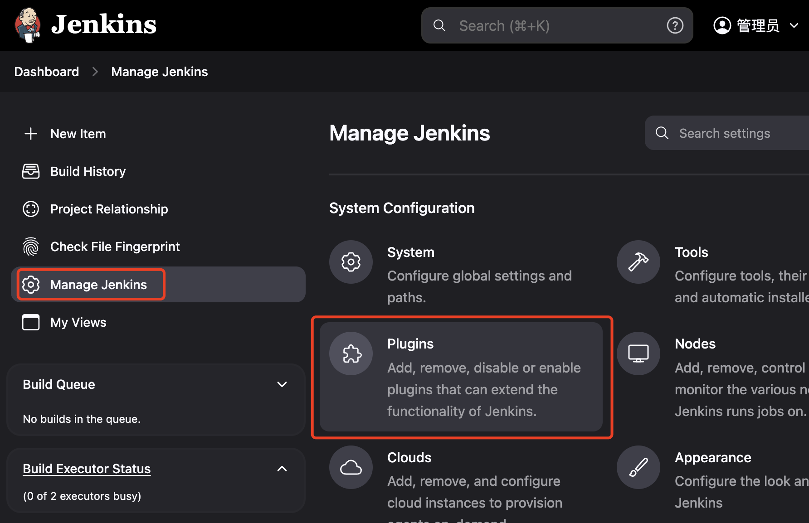
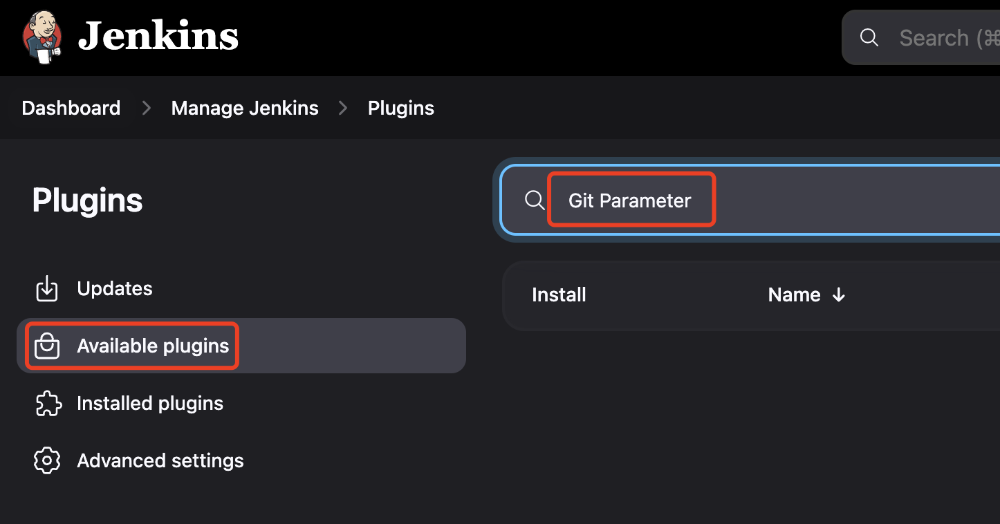
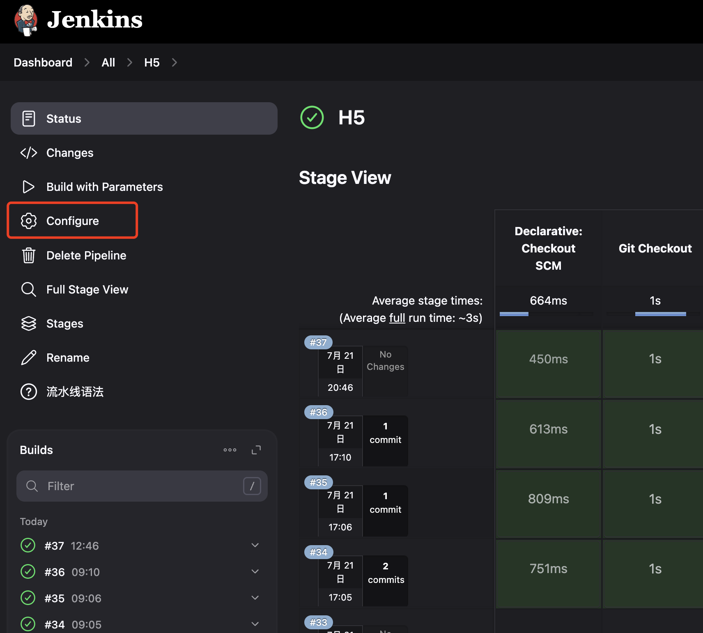

本教程展示如何在 Linux(CentOS 7) 服务器上通过 Docker 部署 Jenkins，并在 Docker 容器中运行 Pipeline 脚本。这样可以方便地使用任何版本的 Node.js 或 Java 沙盒环境。
由于国内服务器无法直接拉取 Docker 镜像，需要先通过本机 VPN 下载 Jenkins 和 Jenkins agent 镜像，然后上传到服务器。
# 获取 Jenkins 镜像
docker pull --platform linux/amd64 jenkins/jenkins:2.468-jdk21
# 保存 Docker 镜像到本地文件
docker save -o jenkins-2.468-jdk21.tar jenkins/jenkins:2.468-jdk21
# 上传到服务器
scp -P 2222 jenkins-2.468-jdk21.tar root@152.22.3.186:/home/docker-images
# 获取 Jenkins agent 镜像
docker pull --platform linux/amd64 jenkins/ssh-agent:jdk21
docker save -o jenkins-ssh-agent-jdk21.tar jenkins/ssh-agent:jdk21
scp -P 2222 jenkins-ssh-agent-jdk21.tar root@152.22.3.186:/home/docker-images
基于 jenkins/jenkins:2.468-jdk21 镜像添加 Docker 支持，创建一个新的 Jenkins 镜像。以下是 Dockerfile 配置内容：
FROM --platform=linux/amd64 jenkins/jenkins:2.468-jdk21
# 切换到 root 用户以安装 Docker CLI
USER root
# 安装必要的软件包
RUN apt-get update && apt-get install -y \
curl \
gnupg2 \
lsb-release \
software-properties-common
# 安装 Docker CLI
# RUN curl -fsSL https://get.docker.com | sh
# 安装特定版本的 Docker CLI
RUN curl -fsSL https://download.docker.com/linux/static/stable/x86_64/docker-26.1.4.tgz | tar xzvf - --strip-components=1 -C /usr/local/bin
# 创建 docker 组并将 jenkins 用户添加到该组
RUN groupadd docker && usermod -aG docker jenkins
# 切换回 jenkins 用户
USER jenkins
构建 Jenkins 新的镜像，命名为 my-jenkins-docker-2468-jdk21
docker build --platform=linux/amd64 -t my-jenkins-docker-2468-jdk21 .
# 保存 Docker 镜像为一个 tar 文件
docker save -o my-jenkins-docker-2468-jdk21.tar my-jenkins-docker-2468-jdk21
# 通过 SCP 传输 tar 文件到远程服务器
scp -P 2222 my-jenkins-docker-2468-jdk21.tar root@152.22.3.186:/home/docker-images
在服务器上添加 Docker Compose 配置 docker-compose.yml。以下是 docker-compose.yml 配置内容：
# https://github.com/jenkinsci/docker/blob/master/README.md#docker-compose-with-jenkins
services:
jenkins:
image: my-jenkins-docker-2468-jdk21 # 自定义镜像
#image: jenkins/jenkins:2.468-jdk21
ports:
- "8086:8080"
volumes:
# 将命名卷 jenkins_home 挂载到容器内的 /var/jenkins_home 目录，用于持久化 Jenkins 的数据。
- jenkins_home:/var/jenkins_home
# 将宿主机的 Docker 挂载到容器内，以便在 Jenkins 容器内直接访问 Docker 引擎，从而支持在 Jenkins 中运行 Docker 命令。
- /var/run/docker.sock:/var/run/docker.sock
ssh-agent:
image: jenkins/ssh-agent:jdk21
volumes:
jenkins_home:
确保与 docker-compose.yml 在同一个目录中。并启动 Jenkins:
docker compose up -d # 启动 Jenkins
docker compose down # 停止并删除与 Docker Compose 配置文件相关的所有容器、网络、卷和镜像
访问 jenkins: http://152.22.3.186:8086/
Git Parameter Plug-In 支持在 CI 上自动加载仓库分支
 在 Manage Jenkins -> System 中设置 Git Parameter
添加 SSH 和 SCP 需要的凭据
ssh-keygen -t rsa 生成 id_rsa 和 id_rsa.pub 文件，将 id_rsa 私钥文本复制到 jenkins 中
修改配置
设置 Git Parameter 可以在构建的时候读取分支，选择分支
可以在构建前选择 生产 还是 开发 模式，在脚本中判断
Pipeline script from SCM 指定脚本位置这方法是将 仓库 config 分支添加一个 Jenkinsfile 配置
安装 Docker Pipeline 插件，支持从管道中构建和使用 Docker 容器。
docker pull --platform linux/amd64 node:14.16.0
docker pull --platform linux/amd64 node:18
docker pull --platform linux/amd64 node:20
docker pull --platform linux/amd64 node:22
# 保存 Docker 镜像到本地文件
docker save -o node14.16.tar node:14.16.0
# 上传到服务器
scp -P 2222 node14.16.tar root@152.22.3.186:/home/docker-images
docker save -o node18.tar node:18
scp -P 2222 node18.tar root@152.22.3.186:/home/docker-images
docker save -o node20.tar node:20
scp -P 2222 node20.tar root@152.22.3.186:/home/docker-images
docker save -o node22.tar node:22
scp -P 2222 node22.tar root@152.22.3.186:/home/docker-images
Pipeline 脚本中使用 Docker nodejs 20 运行示例
pipeline {
//agent any
// pipeline 放到 docker 中执行
agent {
docker {
// 使用 Node.js 18 的 Docker 镜像
image 'node:20'
// 可选：挂载 NPM 缓存目录，加速构建
// 使用 Jenkins 工作空间中的 .npm 目录作为缓存目录，不会有权限写入问题
args '-v ${JENKINS_HOME}/.npm:/home/node/.npm'
}
}
environment {
def git_url="http://152.22.3.186:8081/mall/h5.git"
def git_auth = "12312312-f199-4b15-b087-123123"
def git_branch = "${branch}"
def project_env = "${project_env}"
def data_dir = "/mnt/mall/h5/h5_vip"
// 本地需要上传的目录 以及远程服务器的目录
def localDir = "${WORKSPACE}/h5_vip/test_dir/"
def vip_host = '152.22.3.186'
def vip_remote_dir = "/mnt/mall/h5"
}
stages {
stage('Git Checkout') {
steps {
echo "🏆 WORKSPACE: 【${WORKSPACE}】"
echo "🎯 branch: 【${git_branch}】"
echo "🏅 project_env: 【${project_env}】"
echo 'check git'
checkout([
$class: 'GitSCM',
branches: [[name: "${git_branch}" ]],
doGenerateSubmoduleConfigurations: false,
extensions: [],
submoduleCfg: [],
userRemoteConfigs: [[
credentialsId: "${git_auth}",
url: "${git_url}"
]]
])
sh 'pwd'
sh 'ls -la'
}
}
stage('Send Files') {
when {
expression {
currentBuild.result == null || currentBuild.result == 'SUCCESS'
}
}
steps {
sh 'pwd'
script {
switch (project_env) {
case "vip":
sh '''
ls -la
cd h5_vip
npm install --cache /home/node/.npm --registry=https://registry.npmmirror.com/
ls -la
npm run build
ls -la
rm -rf test_dir
mv dist test_dir
'''
withCredentials([sshUserPrivateKey(credentialsId: '9dfd-4fd5-b94b-7559ca212e9a', keyFileVariable: 'SSH_KEY')]) {
// 连接到远程服务器并删除 test_dir 目录 重新上传
sh '''
ssh -i ${SSH_KEY} -o StrictHostKeyChecking=no root@152.22.3.186 "rm -rf /mnt/mall/h5/test_dir"
scp -i ${SSH_KEY} -o StrictHostKeyChecking=no -P 22 -r "${localDir}" root@152.22.3.186:${vip_remote_dir}
'''
}
break
case "dev":
// for (i in ['152.22.3.186']) {
// data_dir = "/mnt/mall/h5/"
// //sh "ssh $i 'cp -rf ${data_dir}/* ${data_dir}/h5_vip_{uuid_no}'"
// sh "scp -r -o StrictHostKeyChecking=no -i /var/lib/jenkins/.ssh/id_rsa -P 22 '${WORKSPACE}/h5_vip/' '$i:${data_dir}'"
// }
break
}
}
}
}
}
post {
success {
sh "echo 'Success success'"
}
failure {
sh "echo 'Faild faild'"
}
}
}
基于 openjdk:11 创建一个包含 Maven 的自定义 Docker 镜像
FROM --platform=linux/amd64 openjdk:11
# 安装 Maven 3.8.7
ENV MAVEN_VERSION=3.8.7
RUN apt-get update && apt-get install -y wget tar \
&& wget https://archive.apache.org/dist/maven/maven-3/${MAVEN_VERSION}/binaries/apache-maven-${MAVEN_VERSION}-bin.tar.gz \
&& tar xzf apache-maven-${MAVEN_VERSION}-bin.tar.gz -C /opt \
&& ln -s /opt/apache-maven-${MAVEN_VERSION} /opt/maven \
&& rm apache-maven-${MAVEN_VERSION}-bin.tar.gz
# 设置 Maven 环境变量
ENV MAVEN_HOME=/opt/maven
ENV PATH="${MAVEN_HOME}/bin:${PATH}"
# 创建非 root 用户并设置权限
RUN useradd -u 1000 -ms /bin/bash jenkins \
&& mkdir -p /home/jenkins/.m2/repository \
&& chown -R jenkins:jenkins /home/jenkins/.m2
# 切换到非 root 用户
USER jenkins
# 验证 Maven 版本
RUN mvn -version
构建 openjdk 新的镜像，命名为 my-openjdk-maven
docker build -t my-openjdk-maven:3.8.7 .
# 保存 Docker 镜像到本地文件
docker save -o my-openjdk-maven.3.8.7.tar my-openjdk-maven:3.8.7
docker save -o my-openjdk-maven.3.8.8.tar my-openjdk-maven:3.8.8
# 上传到服务器
scp -P 2222 my-openjdk-maven.3.8.7.tar root@106.55.8.163:/home/docker-images
加载 docker 自定义镜像
docker load -i ./my-openjdk-maven.3.8.7.tar
缓存下载的 maven 的包
docker run -it --rm my-openjdk-maven:3.8.7 /bin/bash
# 在【容器】内运行
id jenkins
# uid=1000(jenkins) gid=1000(jenkins) groups=1000(jenkins)
# 在【宿主机】上使用这些 ID 来更改目录的拥有者
sudo chown -R 1000:1000 /root/.m2/
# 将目录权限设置为可读写
sudo chmod -R 777 /root/.m2/
Pipeline 脚本中使用 Docker java openjdk:11 & maven.3.8.7 运行示例
pipeline {
agent {
docker {
image 'my-openjdk-maven:3.8.7'
// 将 Maven 的本地仓库挂载到容器的 /root/.m2 路径，
// 确保你每次构建时都能重用之前下载的依赖
args '-v /root/.m2:/home/jenkins/.m2:rw'
}
}
environment {
def git_url="http://106.55.8.163:8081/mall/springboot-mall.git"
def git_auth = "211ca2-55c4f199-4b15-b087-238db80b102d"
def git_branch = "${branch}"
def project_env = "${project_env}"
def vip_host = '152.22.3.186'
def vip_remote_dir = "/mnt/mall/admin"
}
stages {
stage('Git Checkout') {
steps {
echo 'check git'
checkout([
$class: 'GitSCM',
branches: [[name: "${git_branch}" ]],
doGenerateSubmoduleConfigurations: false,
extensions: [
// 只拉取最新的提交
[$class: 'CloneOption', depth: 1, shallow: true, noTags: true]
],
submoduleCfg: [],
userRemoteConfigs: [[
credentialsId: "${git_auth}",
url: "${git_url}"
]]
])
}
}
stage('Manven Build') {
steps {
/**
* 执行maven打包
* -B --batch-mode 在非交互（批处理）模式下运行(该模式下,当Mven需要输入时,它不会停下来接受用户的输入,而是使用合理的默认值)
* 打包时跳过JUnit测试用例
* -DskipTests 不执行测试用例，但编译测试用例类生成相应的class文件至target/test-classes下
* -Dmaven.test.skip=true，不执行测试用例，也不编译测试用例类
**/
sh "cd ${WORKSPACE} ; mvn clean package -Dmaven.test.skip=true -Dmaven.repo.local=/home/jenkins/.m2/repository -U"
}
}
stage('Send Files') {
when {
expression {
currentBuild.result == null || currentBuild.result == 'SUCCESS'
}
}
steps {
script {
switch (project_env) {
case "pro":
// 部署服务器 SSH 凭据，验证登录用，才可以 ssh 和 scp 上传等功能
withCredentials([sshUserPrivateKey(credentialsId: 'bd6f00e69dfd-4fd5-b94b-7559ca212e9a', keyFileVariable: 'SSH_KEY')]) {
// 连接到远程服务器并删除 admin 目录 重新上传
sh '''
scp -i ${SSH_KEY} -o StrictHostKeyChecking=no -r -P 22 '${WORKSPACE}/admin/target/lib' 'root@${vip_host}:${vip_remote_dir}'
scp -i ${SSH_KEY} -o StrictHostKeyChecking=no -r -P 22 '${WORKSPACE}/admin/target/admin-2.3.jar' 'root@${vip_host}:${vip_remote_dir}'
ssh -i ${SSH_KEY} -o StrictHostKeyChecking=no root@${vip_host} '/mnt/sh/admin-8000.sh restart;'
'''
}
break
case "dev":
break
}
}
}
}
}
post {
success {
sh "echo 'Success success'"
}
failure {
sh "echo 'Faild faild'"
}
}
}